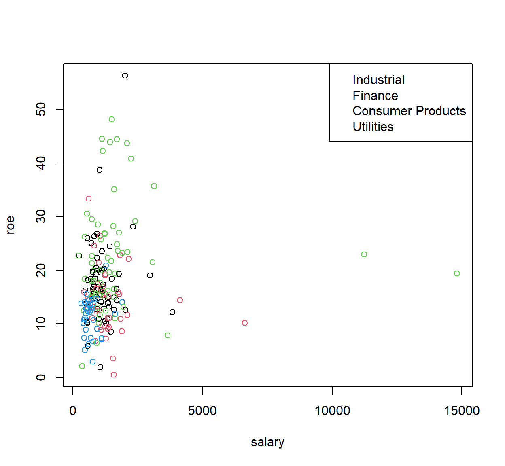
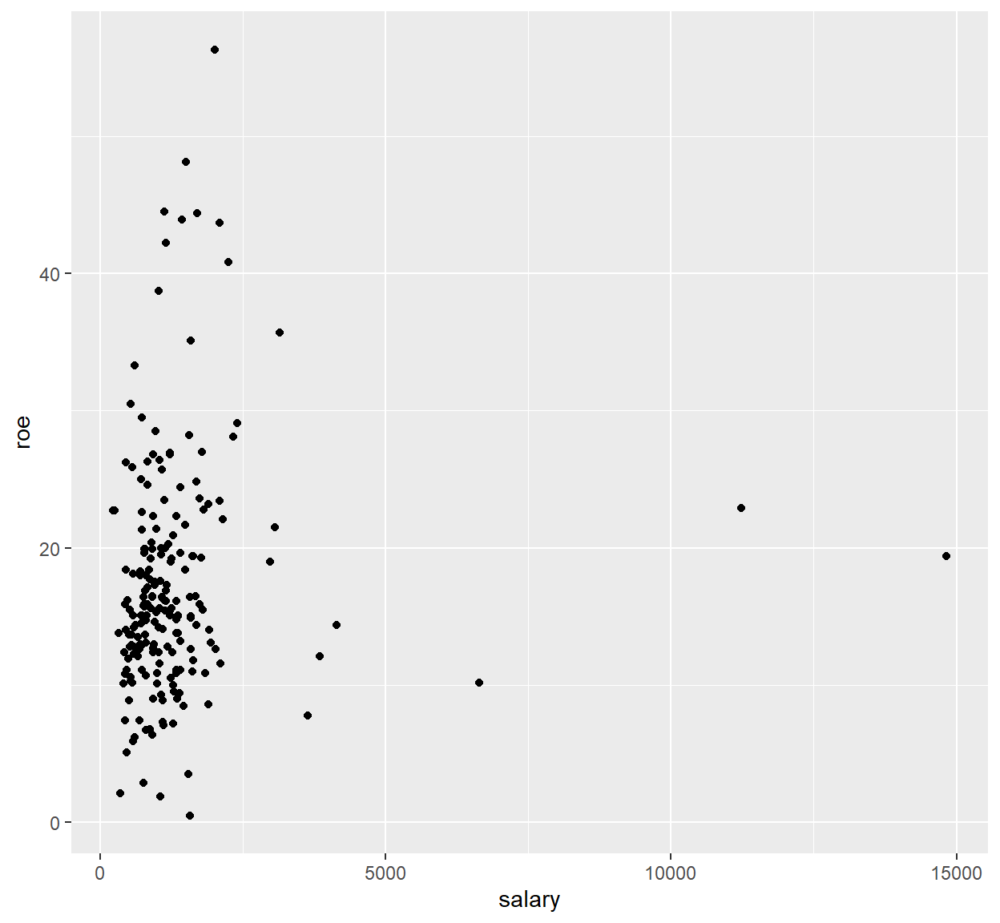
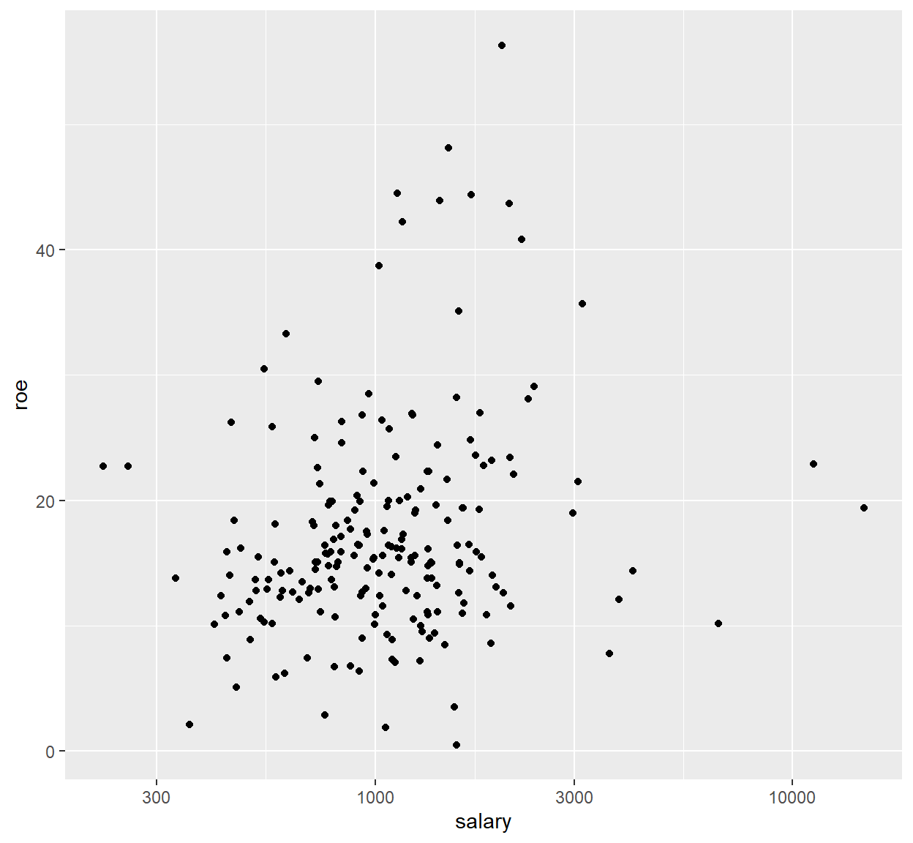
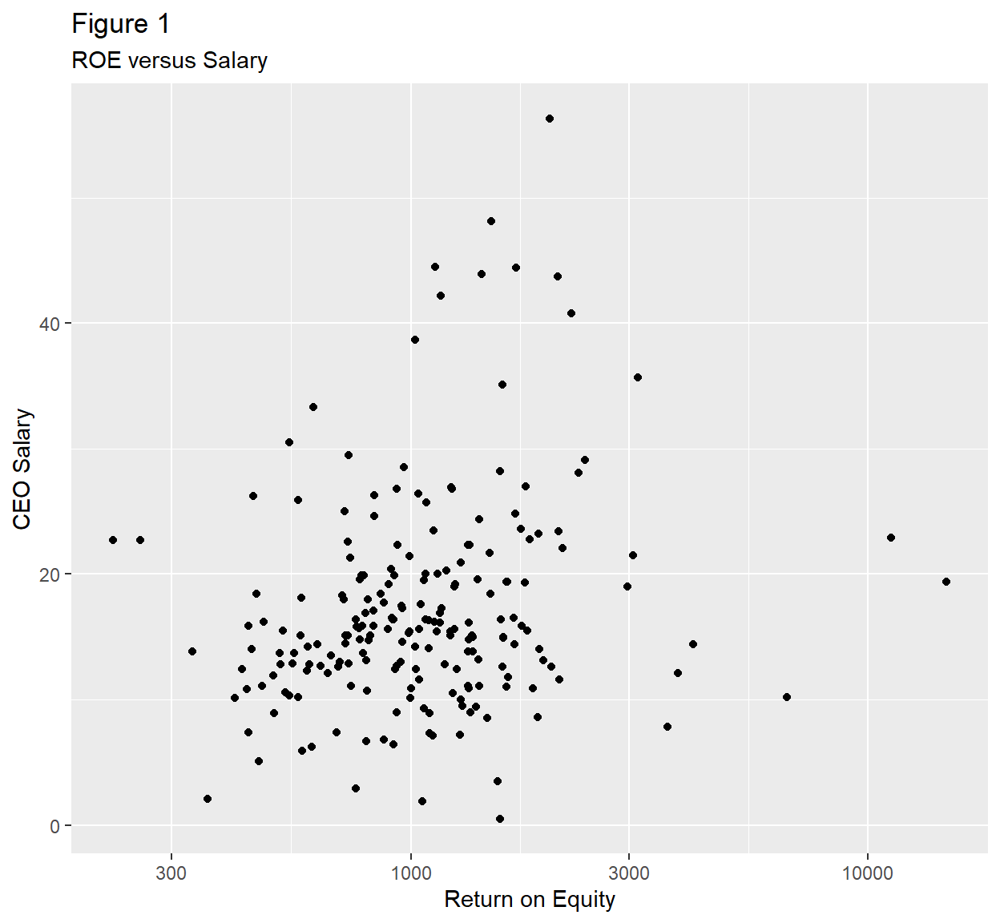
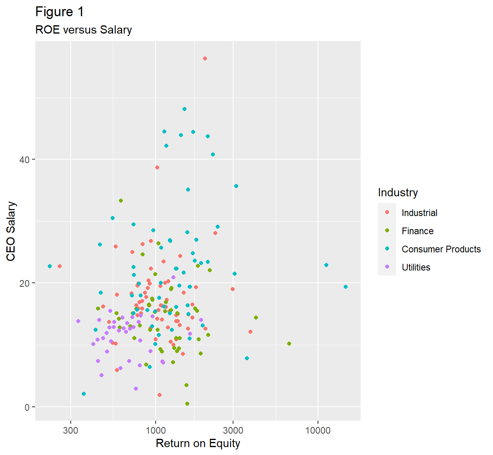

Base Graphics
A little familiarity with both plot syntaxes in R will help you
understand some of the functions in various packages. Graphics in
base are awesome and very flexible but you need to know
(and specify) more to change the options how you want. The
ggplot2 package automates a lot of things intuitively, but
can sometimes be difficult to customize, especially when bundled into a
plot() function in another package.
Example: CEO Salaries
Plot the following:
- A histogram of CEO salary relative frequencies using the base-graphics hist() function;
- A scatterplot of CEO salaries with ROE using the plot() function.
Make sure your plots have descriptive (English) titles: Histogram of Salary, Salary versus ROE, Salary, and ROE.
# `hist()` requires a single variable.
# Use `main`, `xlab`, and `ylab` to add descriptive titles.
# Use `freq` and `probability` options to switch between absolute and relative frequencies.
# `plot()` requires variables x and y as inputs, or a data frame. # `plot()` requires variables x and y as inputs, or a data frame. ceosal1 <- wooldridge::ceosal1
hist(ceosal1$salary, main = "Histogram of Salary", xlab = "Salary", freq = FALSE)
plot(ceosal1$salary, ceosal1$roe, main = "Salary versus ROE", xlab = "Salary", ylab = "ROE")Grammar of Graphics (ggplot2)
Some people prefer base graphics; some prefer gg. Base graphics start
from a more spartan default, and allow for more user customization
depending on your knowledge and experience. ggplot2 has
lots of context-specific tools and themes that come ready-to-use.
Depending on what packages you use, you should know a little of each.
You can call the ggplot() function with no arguments (but add them in
layers) or inline. Either way, the main arguments you need to specify
include (1) data and (2) aesthetics (aes).
Example: CEO Salaries and Returns on Equity
Replicate the previous plots using ggplot geom_hist() and geom_point syntax.
# Don't forget to load the `ggplot2` library!
# You may specify the data and mapping in the `ggplot()` or in each `geom` layer. # `geom_histogram()` requires a dataframe and aes(x).
# You may also specify a "y" in aes() to change the scale of the bars. # `geom_point()` requires a dataframe, and aes(x, y). library(ggplot2)
# Specifying data and mapping in `ggplot()`
ggplot(data = ceosal1, mapping = aes(salary)) +
geom_histogram()
# Specifying data and mapping in `geom` layer.
ggplot() +
geom_point(data = ceosal1, mapping = aes(salary, roe))Options in ggplot
Implement the suggestion in the feedback for your histogram.
Use labs(title, subtitle, x, y), to add titles and
customize the axis labels.
# In the `geom_histogram(..., mapping)`, set `y = after_stat(count)/sum(count)` ggplot(data = ceosal1) +
geom_histogram(mapping = aes(x = salary, y = after_stat(count)/sum(count))) +
labs(title = "Figure 1", subtitle = "Distribution of Salaries", x = "Salary", y = "Relative Frequency")Plotting Groups by color using
ggplot()
One thing that ggplot makes it easy to do is group plots according to different categories using different fill, line, and point colors.
- Rebuild
industrybased on the combination ofindus,finance,consprod, andutilitylike in 19-1 Practice. - Reconstruct the scatterplot of salary versus return on equity by industry.
# `geom_point()` requires a dataframe, and aes(x, y). ceosal1$Industry <- factor(
ceosal1$indus + 2*ceosal1$finance + 3*ceosal1$consprod + 4*ceosal1$utility,
labels = c('Industrial', 'Finance', 'Consumer Products', 'Utilities'))
ggplot() +
geom_point(data = ceosal1, mapping = aes(roe, salary, color = Industry)) +
labs(title = "Figure 1", subtitle = "ROE versus Salary") +
xlab("Return on Equity") +
ylab("CEO Salary")We can do this in base R graphics also, but base R doesn’t automatically add the corresponding legend for the colors.
ceosal1$Industry <- factor(
ceosal1$indus + 2*ceosal1$finance + 3*ceosal1$consprod + 4*ceosal1$utility,
labels = c('Industrial', 'Finance', 'Consumer Products', 'Utilities'))
with(ceosal1, plot(salary, roe, col = Industry))
legend('topright', legend = levels(ceosal1$Industry),
col = factor(levels(ceosal1$industry)), pch = 1)
Note: You can assign your ggplot to an object, which
allows you to store the information for the plot and add additional
geom layers or formatting options later.
g <- ggplot(data = ceosal1, mapping = aes(salary, roe)) +
geom_point()
g
Hmmm… I don’t like the scaling of the x-axis, maybe a log transform…
g <- g +
scale_x_continuous(trans = 'log10')
g
Now maybe make the axes a little prettier…
g <- g +
labs(title = "Figure 1", subtitle = "ROE versus Salary") +
xlab("Return on Equity") +
ylab("CEO Salary")
g
Now add color-coded industry groups…
g <- g + geom_point(aes(color = Industry))
g